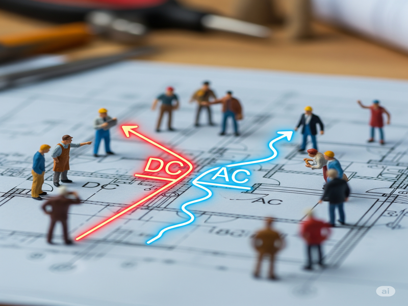
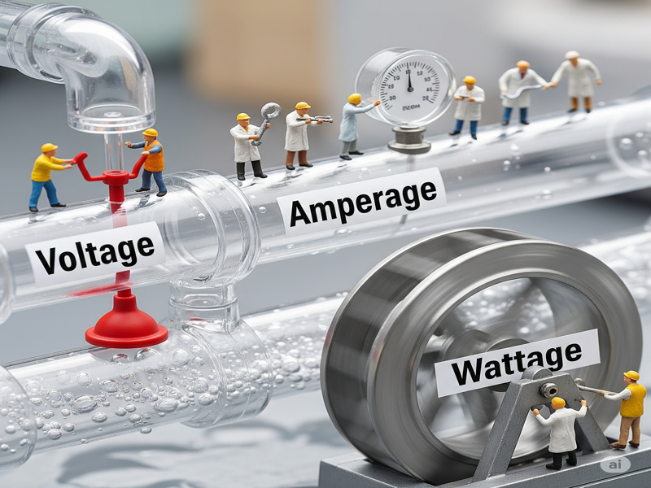
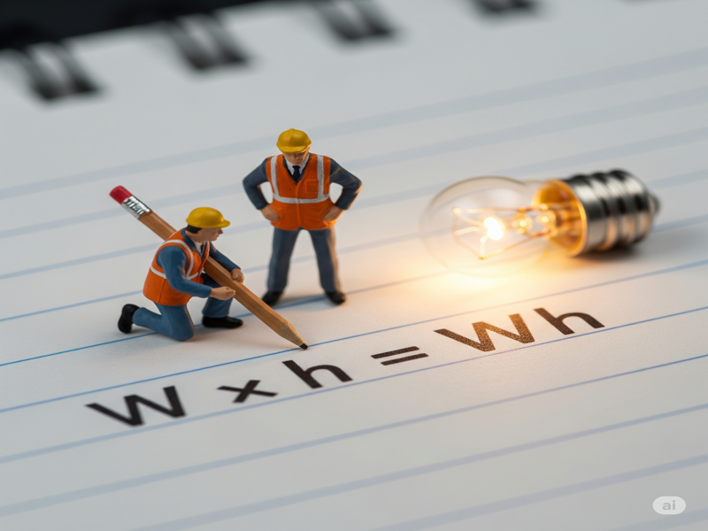

บทที่ 1: รู้จักไฟฟ้า...ฉบับโซลาร์เซลล์
ก่อนที่เราจะออกแบบระบบโซลาร์เซลล์ได้นั้น การทำความเข้าใจพื้นฐานของไฟฟ้าเป็นสิ่งสำคัญที่สุด บทเรียนนี้จะปูพื้นฐานที่จำเป็น เพื่อให้คุณสามารถอ่านสเปกอุปกรณ์และเข้าใจการทำงานของระบบได้อย่างมั่นใจ
1.1 ไฟฟ้า 2 ชนิดที่ต้องรู้จัก: DC และ AC
ในโลกของโซลาร์เซลล์ เราจะเจอกับไฟฟ้า 2 รูปแบบหลัก ซึ่งทำหน้าที่ต่างกันในระบบ
ไฟฟ้ากระแสตรง (DC - Direct Current)
คือไฟฟ้าที่มีทิศทางการไหลของอิเล็กตรอนไปในทิศทางเดียวเสมอ เปรียบเสมือนน้ำที่ไหลในท่อตรงๆ จากจุดหนึ่งไปยังอีกจุดหนึ่งโดยไม่ไหลย้อนกลับ
- แหล่งกำเนิด: แผงโซลาร์เซลล์, แบตเตอรี่, ถ่านไฟฉาย
- หน้าที่ในระบบโซลาร์: เป็นไฟฟ้าที่ผลิตได้จากแผงโซลาร์ และเป็นไฟฟ้าที่ถูกเก็บไว้ในแบตเตอรี่
ไฟฟ้ากระแสสลับ (AC - Alternating Current)
คือไฟฟ้าที่มีทิศทางการไหลของอิเล็กตรอนกลับไปกลับมาด้วยความถี่คงที่ (ในประเทศไทยคือ 50 ครั้งต่อวินาที หรือ 50 Hz) เปรียบเสมือนน้ำในท่อที่ถูกเขย่าไปมา
- แหล่งกำเนิด: โรงไฟฟ้าของการไฟฟ้า, เครื่องปั่นไฟ (Generator)
- หน้าที่ในระบบโซลาร์: เป็นไฟฟ้าที่เราใช้งานกันในบ้าน เครื่องใช้ไฟฟ้าเกือบทุกชนิด เช่น พัดลม, ทีวี, ตู้เย็น, แอร์ ล้วนใช้ไฟฟ้า AC ทั้งสิ้น ดังนั้น "อินเวอร์เตอร์" จึงมีหน้าที่สำคัญในการแปลงไฟ DC จากแผงหรือแบตเตอรี่ให้เป็นไฟ AC
1.2 หน่วยพื้นฐานที่ต้องรู้: Volt, Amp, Watt
เพื่อให้เห็นภาพ เราจะเปรียบเทียบหน่วยไฟฟ้ากับการไหลของน้ำในท่อ
แรงดันไฟฟ้า (Voltage - V)
- คืออะไร: คือ "แรงดัน" หรือ "แรงผลักดัน" ของไฟฟ้า
- เปรียบเหมือน: แรงดันน้ำในท่อ ยิ่งแรงดันสูง น้ำก็ยิ่งพุ่งไปได้แรงและไกล
กระแสไฟฟ้า (Current - A หรือ Ampere)
- คืออะไร: คือ "ปริมาณ" ของอิเล็กตรอนที่ไหลผ่านจุดใดจุดหนึ่งในหนึ่งวินาที
- เปรียบเหมือน: ปริมาณน้ำที่ไหลผ่านท่อในหนึ่งวินาที ท่อใหญ่น้ำก็ไหลได้เยอะ กระแสก็สูง
กำลังไฟฟ้า (Power - W หรือ Watt)
- คืออะไร: คือ "พลังงาน" ที่เกิดขึ้นจากแรงดันและกระแสไฟฟ้า
- สูตรสำคัญ: กำลัง (W) = แรงดัน (V) × กระแส (A) หรือ P = V × I
1.3 การคำนวณพลังงานที่ใช้ไป (Energy Consumption)
เมื่อเรารู้ "กำลัง" (Watt) ของเครื่องใช้ไฟฟ้าแล้ว เราจะสามารถคำนวณ "พลังงาน" ที่มันใช้ไปในช่วงเวลาหนึ่งได้
วัตต์-ชั่วโมง (Watt-hour - Wh)
คือหน่วยที่ใช้วัดปริมาณพลังงานทั้งหมดที่ใช้ไป คำนวณได้จากสูตรง่ายๆ คือ:
พลังงาน (Wh) = กำลังไฟฟ้า (W) × ระยะเวลา (ชั่วโมง)

ตัวอย่าง: พัดลมขนาด 50 วัตต์ จำนวน 2 ตัว
เปิดใช้งานนาน 6 ชั่วโมง จะใช้พลังงานทั้งหมดเท่าไหร่?
คำนวณ: (50 W × 2 ตัว) × 6 h = 100 W × 6 h = 600 Wh
กิโลวัตต์-ชั่วโมง (Kilowatt-hour - kWh) หรือ "ยูนิต"
ในบิลค่าไฟ เราจะคุ้นเคยกับหน่วยที่เรียกว่า "ยูนิต" ซึ่งแท้จริงแล้วก็คือ กิโลวัตต์-ชั่วโมง นั่นเอง
1 kWh (1 ยูนิต) = 1,000 Wh
ดังนั้น จากตัวอย่างพัดลมด้านบนที่ใช้พลังงาน 600 Wh ก็จะเท่ากับ 0.6 kWh หรือ 0.6 ยูนิตนั่นเอง